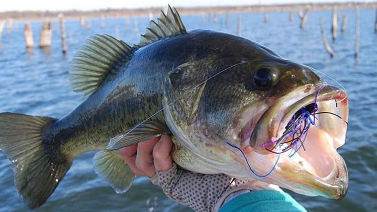

Fishing
My biggest hobby is fishing. I have gotten to the point where it is barely even a hobby anymore because I do it so much. In the summer time, my brother, dad, and I will be either working or we will be out on the water. Freshwater, Saltwater, absolutely any where there is water, that's where we will be. My favorite week in the whole year is the second week of July when my whole family go to Damariscotta Lake. We have gone to this lake since I was born and my mom even went there when she was a kid. This lake holds mostly smallmouth and largemouth bass with many bluegill, sunfish, and shad for the bass to feed on. The week at the lake mostly consists of eight hour days on the water and the rest of the time is occupied relaxing, swimming and the occasional trip to go tubing.
